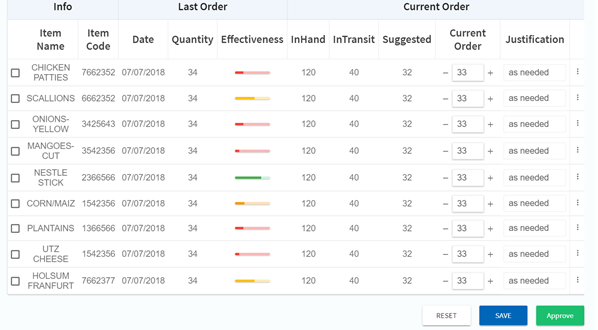

STORE ORDERING¶
The Store Ordering screen on the platform enables users to analyse and develop future store orders for the inventory.
Figure¶
- Info - Gives the detailed information about a product like ‘Item Name’ and ‘Item Code’.
- Last Order -
Date: Gives the last order date of the product.
Quantity: The quantity of the product that was ordered for the store inventory.
Effectiveness:Gives the analysed scale of effectiveness of the last order that was placed for the given product. - Current Order: -
InHand: Gives the current units of the product available in the store.
InTransit: Gives the quantity of the product undergoing through the shipment.
Suggested:Gives the estimate of the quantity of the product to be ordered. Current Order: Gives the accessibility to the users to state the quantity they wish to order for the particular product.
Justification:Enables user to provide a statement of justification to why the current order is not as same as the suggested units.